Regression > Linear regression (OLS)
(Linear) Regression: The workhorse of empirical research in the social sciences
All example files discussed below can be loaded from the Data > Manage page. Click the examples radio button and press Load examples.
Functionality
Start by selecting a response variable and one or more explanatory variables. If two or more explanatory variables are included in the model we may want to investigate if any interactions are present. An interaction exists when the effect of an explanatory variable on the response variable is determined, at least partially, by the level of another explanatory variable. For example, the increase in price for a 1 versus a 2 carrot diamond may depend on the clarity level of the diamond.
In the Summary tab we can test if two or more variables together add significantly to the fit of a model by selecting variables in the Variables to test dropdown. This functionality can be very useful to test if the overall influence of a variable of type factor is significant.
Additional output that requires re-estimation:
- Standardize: Coefficients can be hard to compare if the explanatory variables are measured on different scales. By standardizing the data before estimation we can see which variables move-the-needle most. Note that a one-unit change is now equated to 2 x the standard deviation of the variable
- Center: Replace all explanatory variables X by X - mean(X). This can be useful when trying to interpret interaction effects
- Stepwise: A data-mining approach to select the best fitting model
Additional output that does not require re-estimation:
- RMSE: Root Mean Squared Error and Residual Standard Deviation
- Sum of Squares: The total variance in the response variable split into the variance explained by the Regression and the variance that is left unexplained (i.e., Error)
- VIF: Variance Inflation Factors and Rsq. These are measures of multi-collinearity among the explanatory variables
- Confidence intervals: Coefficient confidence intervals
The Predict tab allows you calculate predicted values from a regression model. You can choose to predict responses for a dataset (i.e., select Data from the Prediction input dropdown), based on a command (i.e., select Command from the Prediction input dropdown), or a combination of the two (i.e., select Data & Command from the Prediction input dropdown).
If you choose Command you must specify at least one variable and value to get a prediction. If you do not specify a value for each variable in the model, either the mean value or the most frequent level will be used. It is only possible to predict outcomes based on variables in the model (e.g., carat must be one of the selected explanatory variables to predict the price of a 2-carat diamond).
- To predict the price of a 1-carat diamond type
carat = 1and press return - To predict the price of diamonds ranging from .5 to 1 carat at steps of size .05 type
carat = seq(.5,.1,.05)and press return - To predict the price of 1,2, or 3 carat diamonds with an ideal cut type
carat = 1:3, cut = "Ideal"and press return
The Plot tab is used to provide basic visualizations of the data as well as diagnostic plots to validate the regression model.
Example 1: Catalog sales
We have access to data from a company selling men’s and women’s apparel through mail-order catalogs (dataset catalog). The company maintains a database on past and current customers’ value and characteristics. Value is determined as the total $ sales to the customer in the last year. The data are a random sample of 200 customers from the company’s database and has the following 4 variables
- Sales = Total sales (in $) to a household in the past year
- Income = Household income ($1000)
- HH.size = Size of the household (# of people)
- Age = Age of the head of the household
The catalog company is interested in redesigning their Customer Relationship Management (CRM) strategy. We will proceed in two steps:
- Estimate a regression model using last year’s sales total. Response variable: sales total for each of the 200 households; Explanatory variables: household income (measured in thousands of dollars), size of household, and age of the household head. To access this dataset go to Data > Manage, select
examplesfrom theLoad data of typedropdown, and press theLoad examplesbutton. Then select thecatalogdataset. - Interpret each of the estimated coefficients. Also provide a statistical evaluation of the model as a whole.
- Which explanatory variables are significant predictors of customer value (use a 95% confidence level)?
Answer:
Select the relevant variables mentioned above and press the Estimate button. Output from Regression > Linear regression (OLS) is provided below:
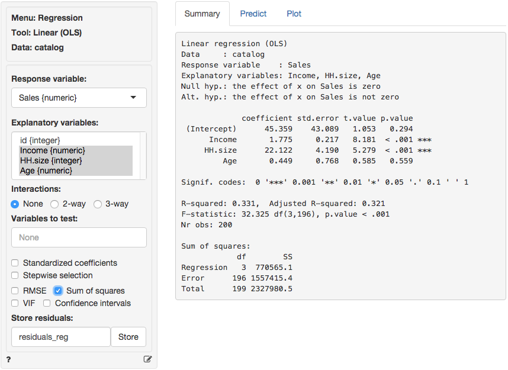
The null and alternate hypothesis for the F-test can be formulated as follows:
- \(H_0\): All regression coefficients are equal to 0
- \(H_a\): At least one regression coefficient is not equal to zero
The F-statistic suggests that the regression model as a whole explains a significant amount of variance in Sales. The calculated F-statistic is equal to 32.33 and has a very small p.value (< 0.001). The amount of variance in sales explained by the model is equal to 33.1% (see R-squared).
We can replicate the standard F-test that is reported as part of all regression output by selecting income, HH.size, and Age in the Variables to test box. The relevant output is shown below.
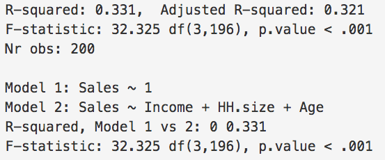
Note that in this example, “model 1” is a regression without explanatory variables. As you might expect, the explained variance for model 1 is equal to zero. The F-test compares the fit of model 1 and model 2, adjusted for the difference in the number of coefficients estimated in each model. The test statistic to use is described below. \(R^2_2\) is the explained variance for model 2 and \(R^2_1\) is the explained variance for model 1. \(n\) is equal to the number of rows in the data, and \(k_2\) (\(k_1\)) is equal to the number of estimated coefficients in model 2 (model 1).
\[ \begin{eqnarray} F & = & \frac{(R^2_2 - R^2_1)/(k_2 - k_1)}{(1 - R^2_2)/(n - k_2 - 1)} \\\\ & = & \frac{(0.331 - 0)/(3 - 0)}{(1 - 0.331)/(200 - 3 - 1)} \\\\ & = & 32.325 \end{eqnarray} \]
We can use the provided p.value associated with an F-statistic of 32.325 to evaluate the null hypothesis. We can also calculate the critical F-statistic using the probability calculator. As we can see from the output below that value is 2.651. Because the provided p.value is < 0.001 and the calculated F-statistic is larger than the critical value (32.325 > 2.651) we reject null hypothesis that all coefficient are equal to zero.
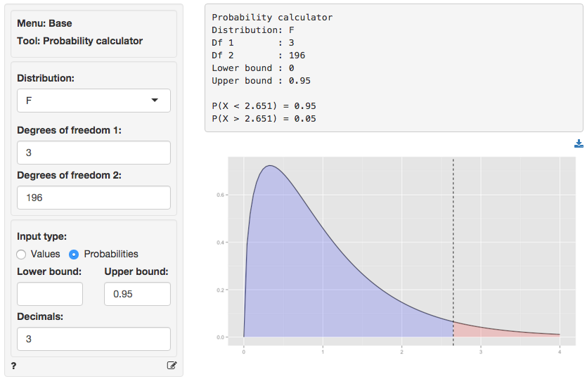
The coefficients from the regression can be interpreted as follows:
- For an increase in income of $1000 we expect, on average, to see an increase in sales of $1.7754, keeping all other variables in the model constant.
- For an increase in household size of 1 person we expect, on average, to see an increase in sales of $22.1218, keeping all other variables in the model constant.
- For an increase in the age of the head of the household of 1 year we expect, on average, to see an increase in sales of $0.45, keeping all other variables in the model constant.
For each of the explanatory variables the following null and alternate hypotheses can be formulated:
- H0: The coefficient associated with explanatory variable x is equal to 0
- Ha: The coefficient associated with explanatory variable x is not equal to 0
The coefficients for Income and HH.size are both significant (p.values < 0.05), i.e., we can reject H0 for each of these coefficients. The coefficient for Age HH is not significant (p.value > 0.05), i.e., we cannot reject H0 for Age HH. We conclude that a change in Age of the household head does not lead to a significant change in sales.
We can also use the t.values to evaluate the null and alternative hypotheses for the coefficients. Because the calculated t.value for Income and HH.size is larger than the critical t.value we reject the null hypothesis for both effects. We can obtain the critical t.value by using the probability calculator in the Base menu. For a t-distribution with 196 degrees of freedom (see the Errors line in the Sum of Squares table shown above) the critical t.value is 1.972. We have to enter 0.025 and 0.975 as the lower and upper probability bounds in the probability calculator because the alternative hypothesis is two.sided.
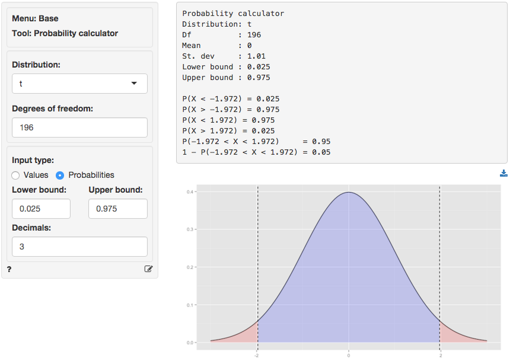
Example 2: Ideal data for regression
The data ideal contains simulated data that is very useful to demonstrate what data for, and residuals from, a regression should ideally look like. The data has 1,000 observations on 4 variables. y is the response variable and x1, x2, and x3 are explanatory variables. The plots shown below can be used as a bench mark for regressions on real world data. We will use Regression > Linear regression (OLS) to conduct the analysis. First, go the the Plots tab and select y as the response variable and x1, x2, and x3 as the explanatory variables.
y, x2, and x3 appear (roughly) normally distributed whereas x1 appears (roughly) uniformly distributed. There are no indication of outliers or severely skewed distributions.

In the plot of correlations there are clear associations among the response and explanatory variables as well as among the explanatory variables themselves. Note that in an experiment the x’s of interest would have a zero correlation. This is very unlikely in historical data however. The scatter plots in the lower-diagonal part of the plot show that the relationships between the variables are (approximately) linear.

The scatter plots of y (the response variable) against each of the explanatory variables confirm the insight from the correlation plot. The line fitted through the scatter plots is sufficiently flexible that it would pickup any non-linearities. The lines are, however, very straight, suggesting that a linear model will likely be appropriate.
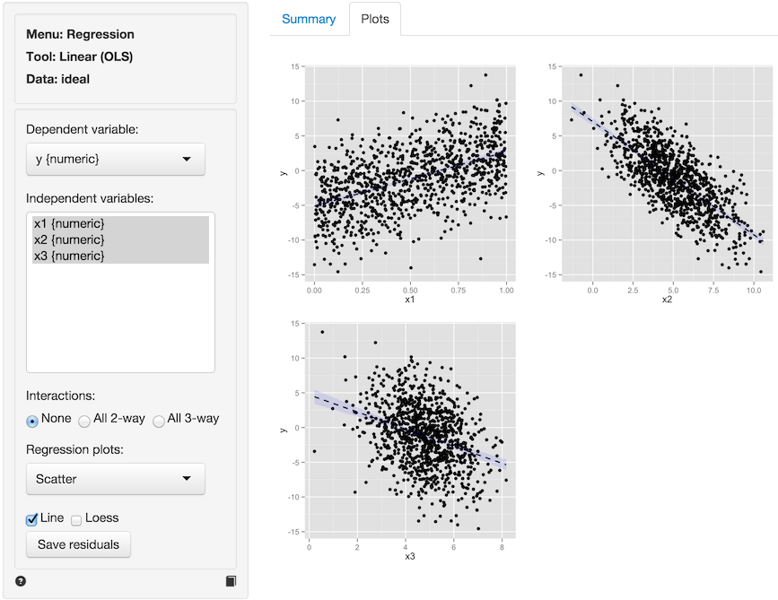
The dashboard of six residual plots looks excellent, as we might expect for these data. True values and predicted values from the regression form a straight line with random scatter, i.e., as the actual values of the response variable go up, so do the predicted values from the model. The residuals (i.e., the differences between the values of the response variable data and the values predicted by the regression) show no pattern and are randomly scattered around a horizontal line. Any pattern would suggest that the model is better (or worse) at predicting some parts of the data compared to others. If a pattern were visible in the Residual vs Row order plot we might be concerned about auto-correlation. Again, the residuals are nicely scattered about a horizontal axis. Note that auto-correlation is a problem we are really only concerned about when we have time-series data. The Q-Q plot shows a nice straight and diagonal line, evidence that the residuals are normally distributed. This conclusion is confirmed by the histogram of the residuals and the density plot of the residuals (green) versus the theoretical density of a normally distributed variable (blue line).
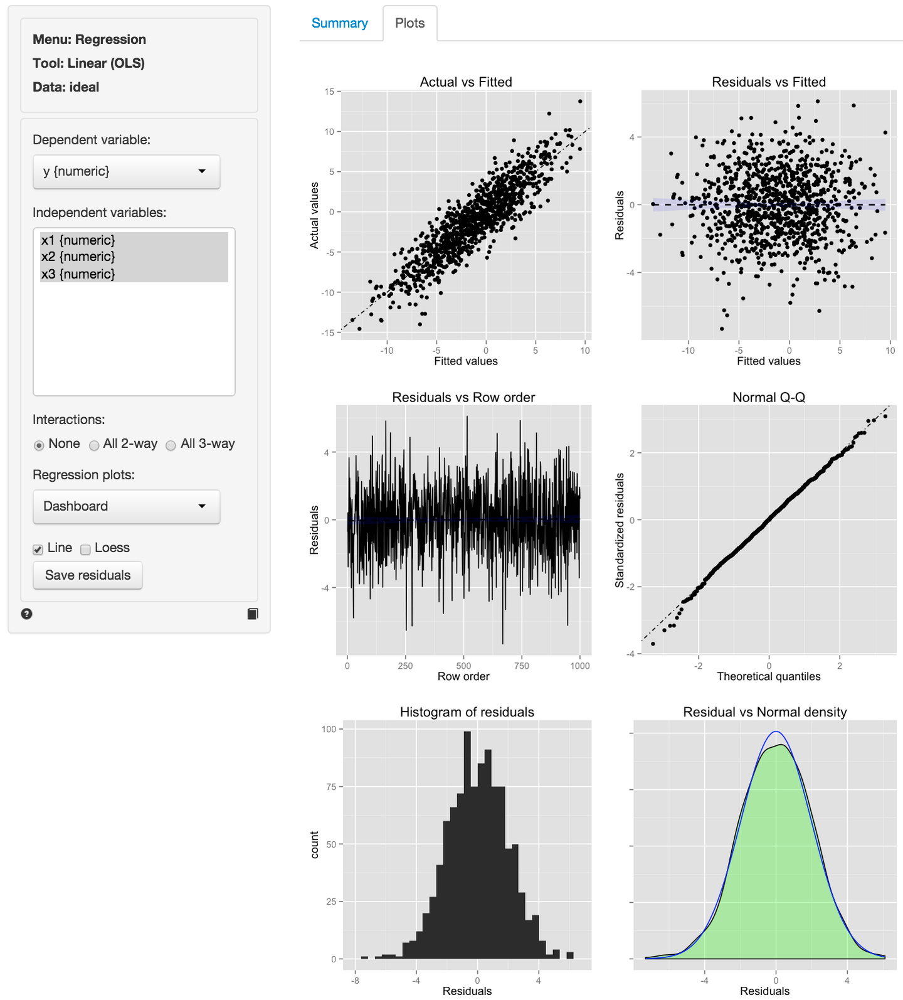
The final diagnostic we will discuss is a set of plots of the residuals versus the explanatory variables (or predictors). There is no indication of any trends or heteroscedasticity. Any patterns in these plots would be cause for concern. There are also no outliers, i.e., points that are far from the main cloud of data points.

Since the diagnostics look good, we can draw inferences from the regression. First, the model is significant as a whole: the p.value on the F-statistic is less than 0.05 therefore we reject the null hypothesis that all three variables in the regression have slope equal to zero. Second, each variable is statistically significant. For example, the p.value on the t-statistic for x1 is less than 0.05 therefore we reject the null hypothesis that x1 has a slope equal to zero when x2 and x3 are also in the model (i.e., ‘holding all other variables in the model constant’).
Increases in x1 and x3 are associated with increases in y whereas increases in x2 are associated with decreases in y. Since these are simulated data the exact interpretation of the coefficient is not very interesting. However, in the scatterplot it looks like increases in x3 are associated with decreases in y. What explains the difference? Hint: consider the correlation plots.
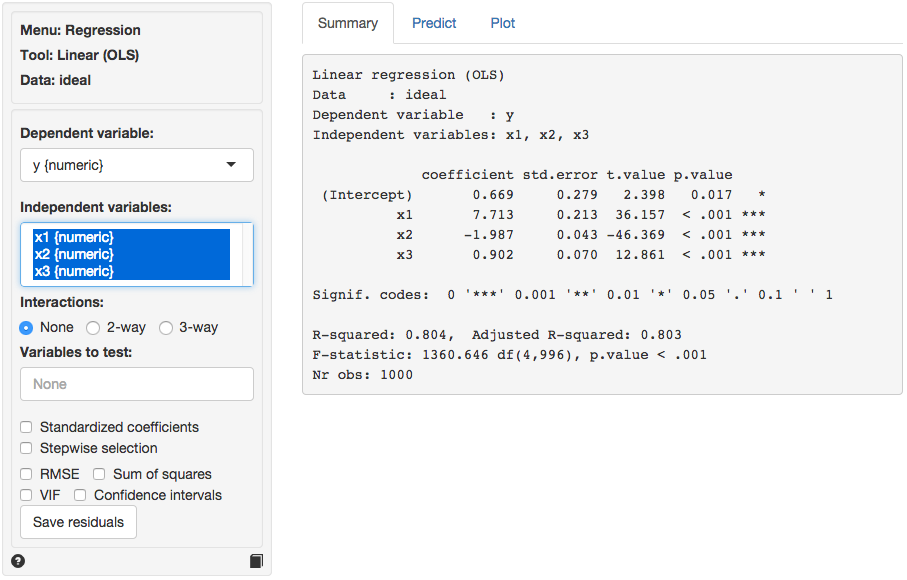
Example 3: Linear or log-log regression?
Both linear and log-log regressions are commonly applied to business data. In this example we will look for evidence in the data and residuals that may suggest which model specification is appropriate for the available data.
The data diamonds contains information on prices of 3,000 diamonds. A more complete description of the data and variables is available from the Data > Manage page. Select the variable price as the response variable and carat and clarity as the explanatory variables. Before looking at the parameter estimates from the regression go to the Plots tab to take a look at the data and residuals. Below are the histograms for the variables in the model. Price and carat seem skewed to the right. Note that the direction of skew is determined by where the tail is.
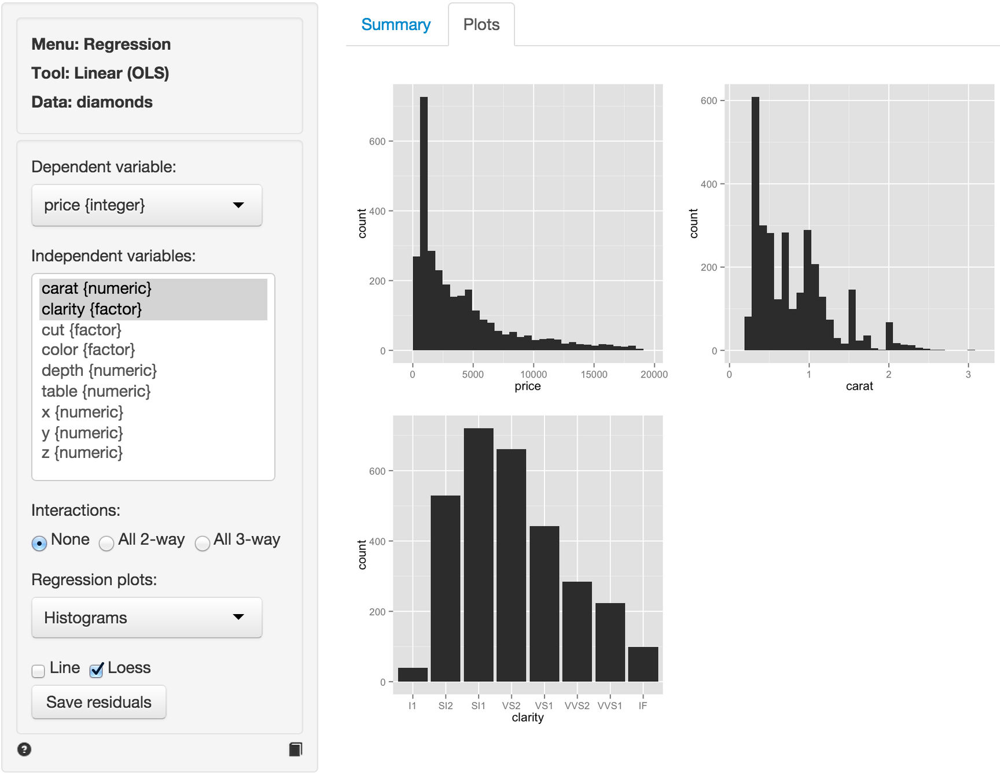
In the plot of correlations there are clear associations among the response and explanatory variables. The correlation between price and carat is very large (i.e., 0.93). The correlation between carat and clarity of the diamond is significant and negative.
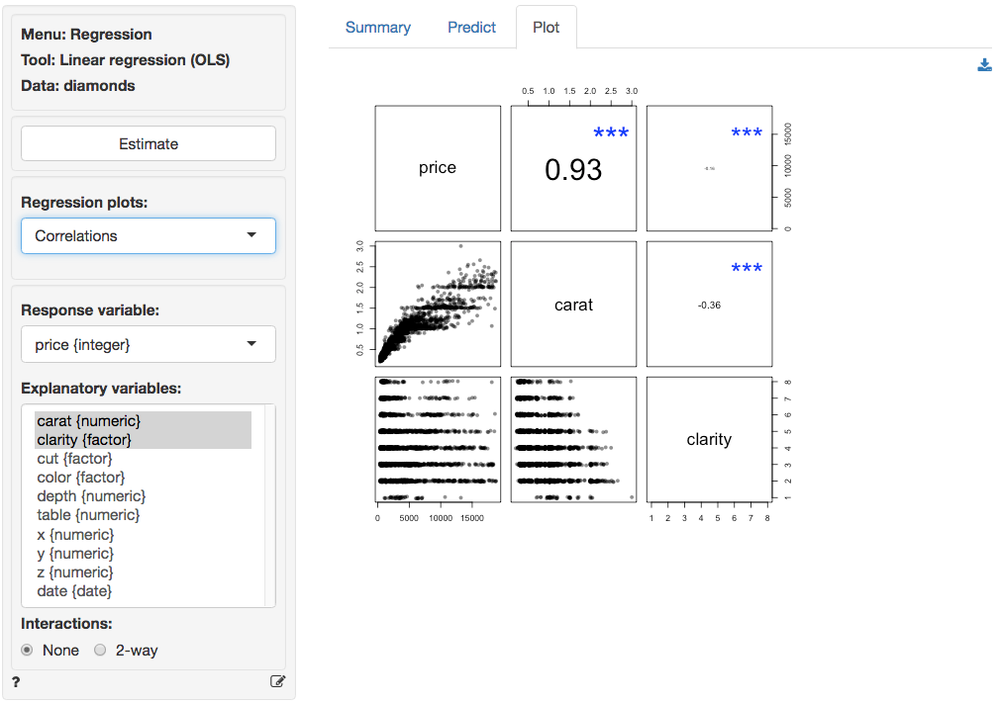
The scatter plots of price (the response variable) against the explanatory variables are not as clean as for the ideal data in Example 2. The line fitted through the scatter plots is sufficiently flexible to pickup non-linearities. The line for carat seems to have some curvature and the points do not look randomly scattered around that line. In fact the points seem to fan-out for higher prices and number of carats. There does not seem to be very much movement in price for different levels of clarity. If anything, the price of the diamond seems to go down as clarity increase. A surprising result we will discuss in more detail below.
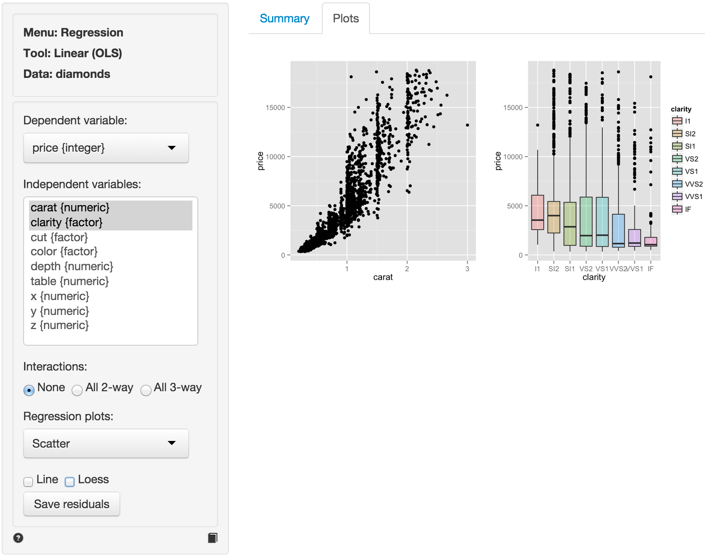
The dashboard of six residual plots looks less than stellar. The true values and predicted values from the regression form an S-shaped curve. At higher actual and predicted values the spread of points around the line is wider, consistent with what we saw in the scatter plot of price versus carat. The residuals (i.e., the differences between the actual data and the values predicted by the regression) show an even more distinct pattern as they are clearly not randomly scattered around a horizontal axis. The Residual vs Row order plot looks perfectly straight indicating that auto-correlation is not a concern. Finally, while for the ideal data in Example 2 the Q-Q plot showed a nice straight diagonal line, here dots clearly separate from the line at the right extreme. Evidence that the residuals are not normally distributed. This conclusions is confirmed by the histogram and density plots of the residuals that show a more spiked appearance than a normally distributed variable would.
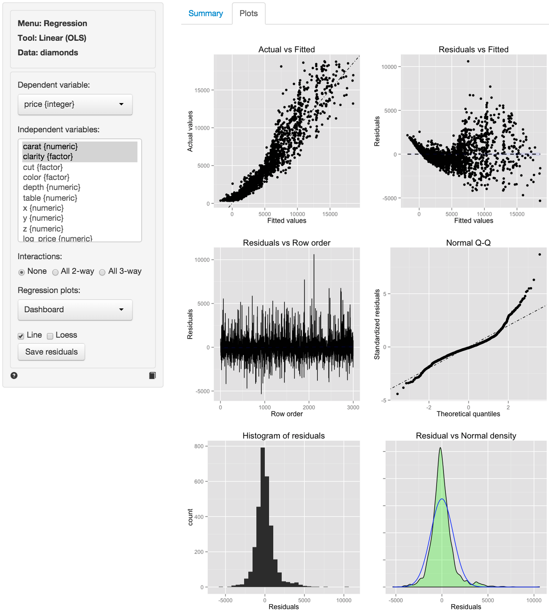
The final diagnostic we will discuss is a set of plots of the residuals versus the explanatory variables (or predictors). The residuals fan-out from left to right in the plot of residuals vs carats. The scatter plot of clarity versus residuals shows outliers with strong negative values for lower levels of clarity and outliers with strong positive values for diamonds with higher levels of clarity.

Since the diagnostics do not look good, we should not draw inferences from this regression. A log-log specification may be preferable. A quick way to check the validity of a log-log model change is available through the Data > Visualize tab. Select price as the Y-variable and carat as the X-variable in a Scatter plot. Check the log X and log Y boxes to produce the plot below. The relationship between log-price and log-carat looks close to linear. Exactly what we are looking for!
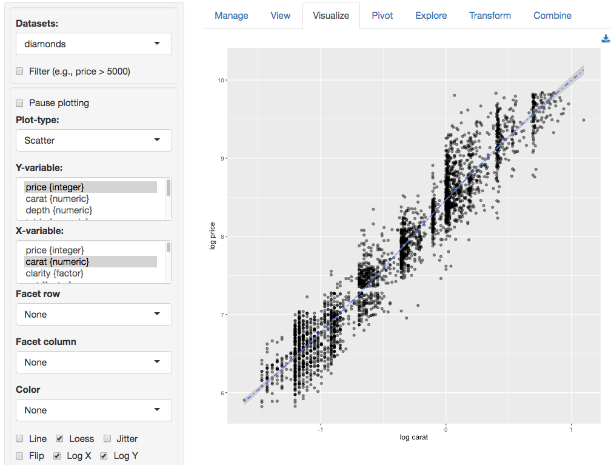
We will apply a (natural) log (or ln) transformation to both price and carat and rerun the analysis to see if the log-log specification is more appropriate for the available data. This transformation can be done in Data > Transform. Select the variables price and carat. Choose Transform from the Transformation type drop-down and choose Ln (natural log) from the Apply function drop-down. Make sure to click the Store button so the new variables are added to the dataset. Note that we cannot apply a log transformation to clarity because it is a categorical variable.
In Regression > Linear regression (OLS) select the variable price_ln as the response variable and carat_ln and clarity as the explanatory variables. Before looking at the parameter estimates from the regression go to the Plots tab to take a look at the data and residuals. Below are the histograms for the variables in the model. Note that price_ln and carat_ln are not right skewed, a good sign.
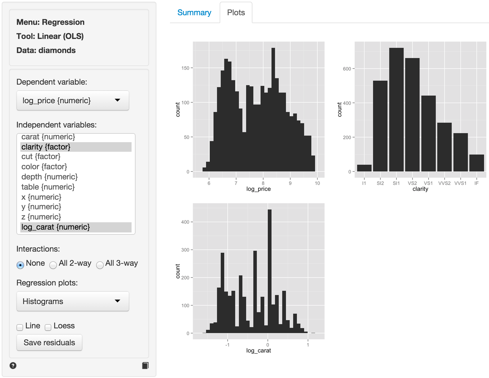
In the plot of correlations there are still clear associations among the response and explanatory variables. The correlation between price_ln and carat_ln is extremely large (i.e., .93). The correlation between carat_ln and clarity of the diamond is significant and negative.
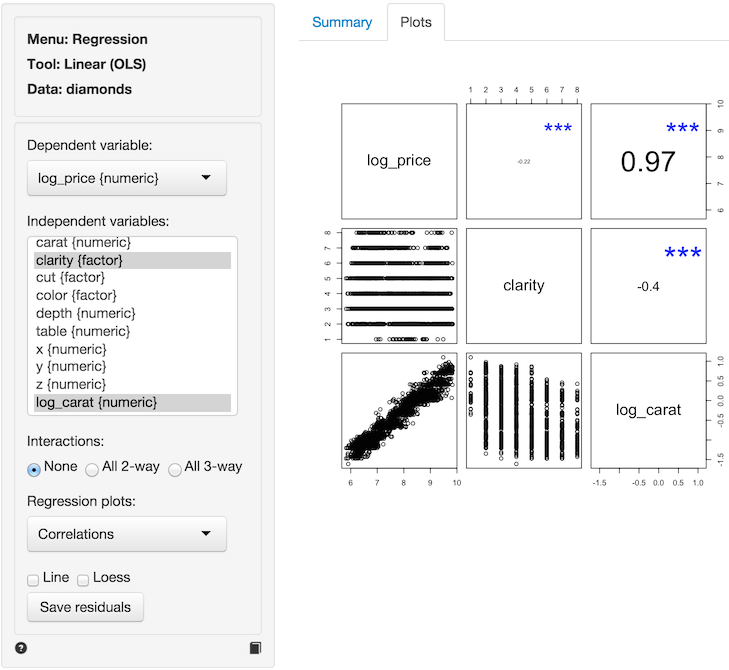
The scatter plots of price_ln (the response variable) against the explanatory variables are now much cleaner. The line through the scatter plot of price_ln versus carat_ln is (mostly) straight. Although the points do have a bit of a blocked shape around the line, the scattering seems mostly random. We no longer see the points fan-out for higher values of price_ln and carat_ln. There seems to be a bit more movement in price_ln for different levels of clarity. However, the price_ln of the diamond still goes down as clarity increases which is unexpected. We will discuss this result below.
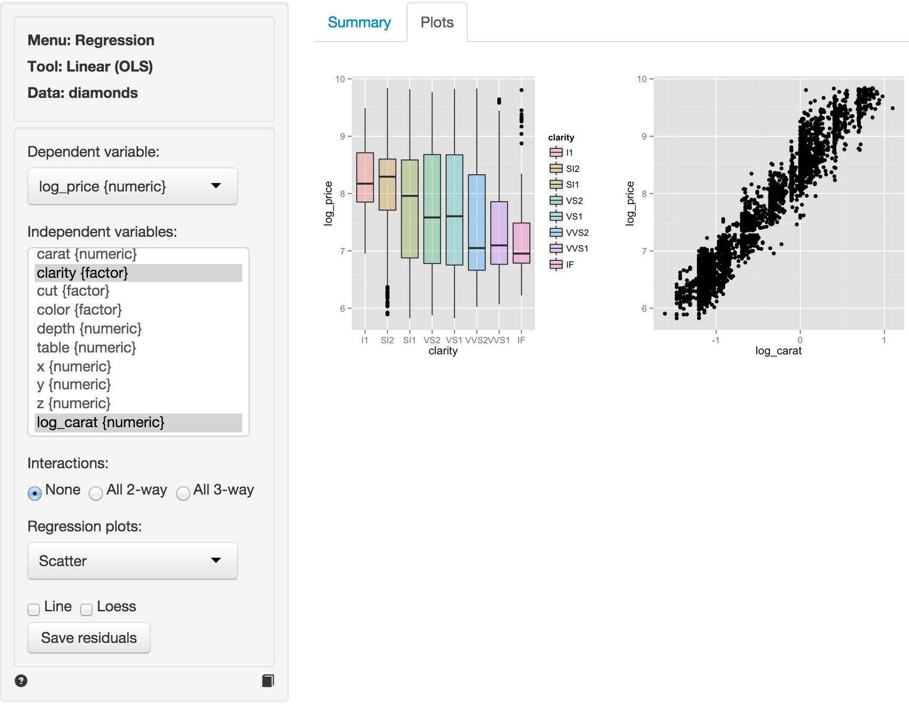
The dashboard of six residual plots looks much better than for the linear model. The true values and predicted values from the regression (almost) form a straight line. Although at higher and lower actual and predicted values the line is perhaps still very slightly curved. The residuals are much closer to a random scatter around a horizontal line. The Residual vs Row order plot still looks perfectly straight indicating that auto-correlation is not a concern. Finally, the Q-Q plot shows a nice straight and diagonal line, just like we saw for the ideal data in Example 2. Evidence that the residuals are now normally distributed. This conclusion is confirmed by the histogram and density plot of the residuals.
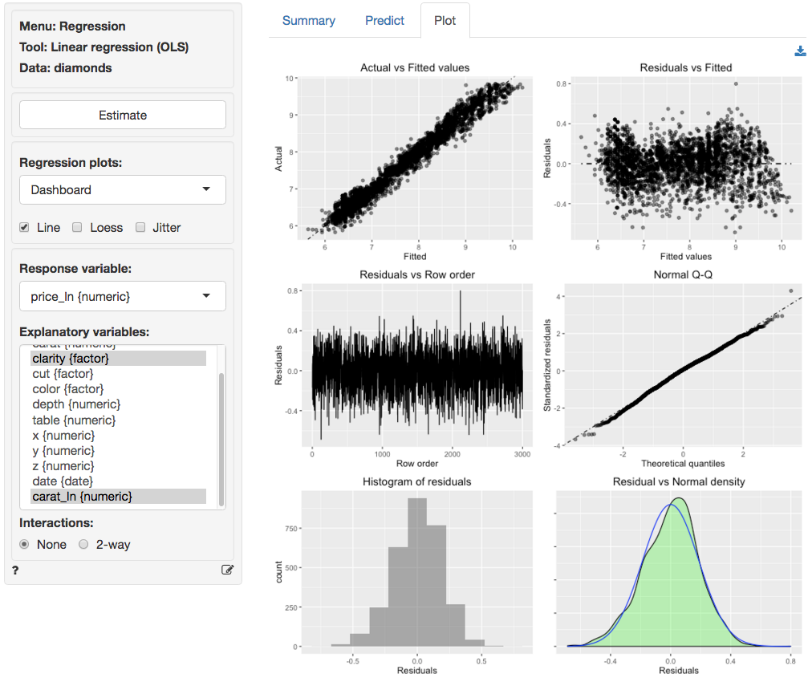
The final diagnostic we will discuss is a set of plots of the residuals versus the explanatory variables (or predictors). The residuals look much closer to random scatter around a horizontal line compared to the linear model. Although for low (high) values of carat_ln the residuals may be a bit higher (lower).
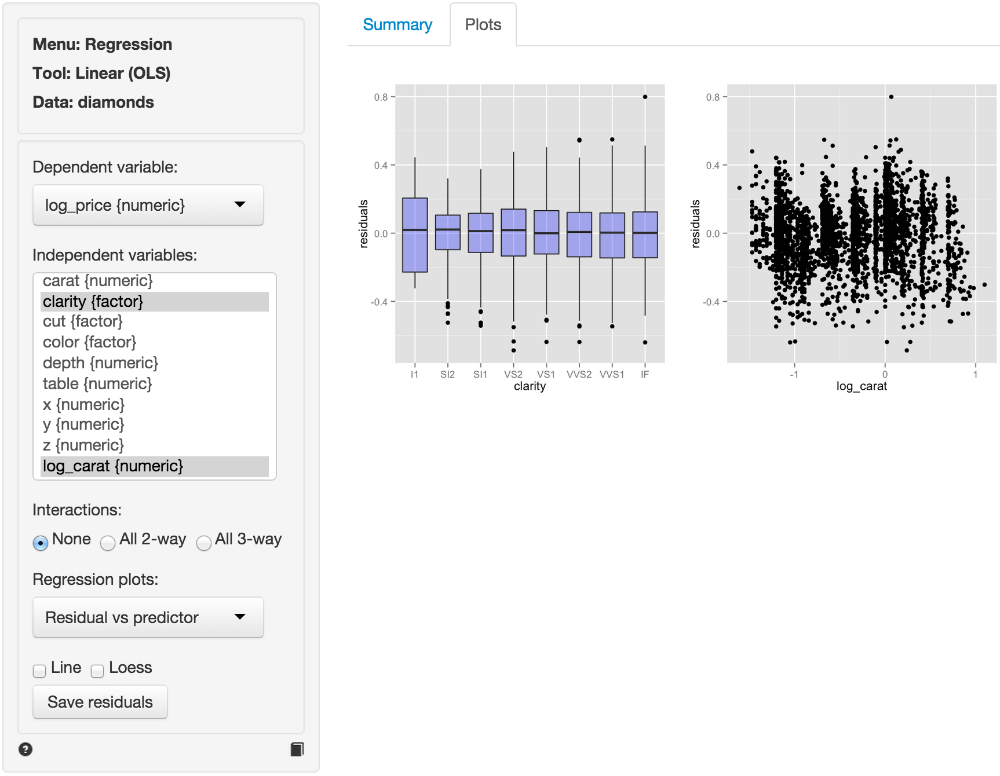
Since the diagnostics now look much better, we can feel more confident about drawing inferences from this regression. The regression results are available in the Summary tab. Note that we get 7 coefficients for the variable clarity compared to only one for carat_ln. How come? If you look at the data description (Data > Manage) you will see that clarity is a categorical variables with levels that go from IF (worst clarity) to I1 (best clarity). Categorical variables must be converted to a set of dummy (or indicator) variables before we can apply numerical analysis tools like regression. Each dummy indicates if a particular diamond has a particular clarity level (=1) or not (=0). Interestingly, to capture all information in the 8-level clarity variable we only need 7 dummy variables. Note there is no dummy variable for the clarity level I1 because we don’t actually need it in the regression. When a diamond is not of clarity SI2, SI1, VS2, VS1, VVS2, VVS1 or IF we know that in our data it must be of clarity I1.
The F-statistic suggests that the regression model as a whole explains a significant amount of variance in price_ln. The F-statistic is very large and has a very small p.value (< 0.001) so we can reject the null hypothesis that all regression coefficients are equal to zero. The amount of variance in price_ln explained by the model is equal to 96.6. It seems likely that prices of diamonds will be much easier to predict than demand for diamonds.
The null and alternate hypothesis for the F-test can be formulated as follows: H0: All regression coefficients are equal to 0 Ha: At least one regression coefficient is not equal to zero
The coefficients from the regression can be interpreted as follows:
- For a 1% increase in carats we expect, on average, to see a 1.809% increase in the price of a diamond of, keeping all other variables in the model constant
- Compared to a diamond of clarity I1 we expect, on average, to pay 100x(exp(.444)-1) = 55.89% more for a diamond of clarity SI2, keeping all other variables in the model constant
- Compared to a diamond of clarity I1 we expect, on average, to pay 100x(exp(.591)-1) = 80.58% more for a diamond of clarity SI1, keeping all other variables in the model constant
- Compared to a diamond of clarity I1 we expect, on average, to pay 100x(exp(1.080)-1) = 194.47% more for a diamond of clarity IF, keeping all other variables in the model constant
The coefficients for each of the levels of clarity imply that an increase in clarity will increase the price of diamond. Why then did the scatter plot of clarity versus (log) price show price decreasing with clarity? The difference is that in a regression we can determine the effect of a change in one variable (e.g., clarity) keeping all other variables in the model constant (i.e., carat). Bigger, heavier, diamonds are more likely to have flaws compared to small diamonds so when we look at the scatter plot we are really seeing the effect of not only improving clarity on price but also the effect of carats which are negatively correlated with clarity. In a regression, we can compare the effects of different levels of clarity on (log) price for a diamond of the same size (i.e., keeping carat constant). Without (log) carat in the model the estimated effect of clarity would be incorrect due to omitted variable bias. In fact, from a regression of price_ln on clarity we would conclude that a diamond of the highest clarity in the data (IF) would cost 59.22% less compared to a diamond of the lowest clarity (I1). Clearly this is not a sensible conclusion.
For each of the explanatory variables the following null and alternate hypotheses can be formulated: H0: The coefficient associated with explanatory variable X is equal to 0 Ha: The coefficient associated with explanatory variable X is not equal to 0
All coefficients in this regression are highly significant.
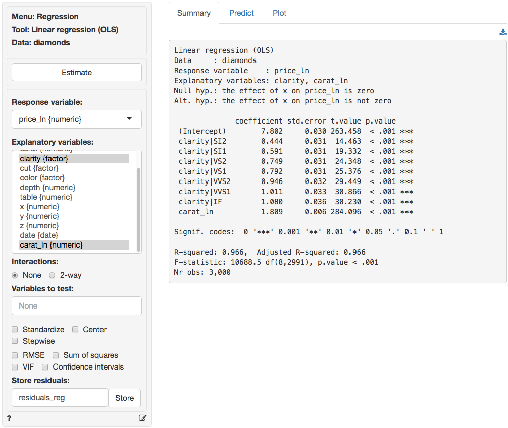
Technical notes
Coefficient interpretation for a linear model
To illustrate the interpretation of coefficients in a regression model we start with the following equation:
\[ S_t = a + b P_t + c D_t + \epsilon_t \]
where \(S_t\) is sales in units at time \(t\), \(P_t\) is the price in $ at time \(t\), \(D_t\) is a dummy variable that indicates if a product is on display in a given week, and \(\epsilon_t\) is the error term.
For a continuous variable such as price we can determine the effect of a $1 change, while keeping all other variables in the model constant, by taking the partial derivative of the sales equation with respect to \(P\).
\[ \frac{ \partial S_t }{ \partial P_t } = b \]
So \(b\) is the marginal effect on sales of a $1 change in price. Because a dummy variable such as \(D\) is not continuous we cannot use differentiation and the approach needed to determine the marginal effect is a little different. If we compare sales levels when \(D = 1\) to sales levels when \(D = 0\) we see that
\[ a + b P_t + c \times 1 - a + b P_t + c \times 0 = c \]
For a linear model \(c\) is the marginal effect on sales when the product is on display.
Coefficient interpretation for a semi-log model
To illustrate the interpretation of coefficients in a semi-log regression model we start with the following equation:
\[ ln S_t = a + b P_t + c D_t + \epsilon_t \]
where \(ln S_t\) is the (natural) log of sales at time \(t\). For a continuous variable such as price we can again determine the effect of a small change (e.g., $1 for a $100 dollar product), while keeping all other variables in the model constant, by taking the partial derivative of the sales equation with respect to \(P\). For the left-hand side of the equation we can use the chain-rule to get
\[ \frac {\partial ln S_t}{\partial P_t} = \frac{1}{S_t} \frac{\partial S_t}{\partial P_t} \]
In words, the derivative of the natural logarithm of a variable is the reciprocal of that variable, times the derivative of that variable. From the discussion on the linear model above we know that
\[ \frac{ \partial a + b P_t + c D_t}{ \partial P_t } = b \]
Combining these two equations gives
\[ \frac {1}{S_t} \frac{\partial S_t}{\partial P_t} = b \; \text{or} \; \frac {\Delta S_t}{S_t} \approx b \]
So a $1 change in price leads to a \(100 \times b\%\) change in sales. Note that this approximation is only appropriate for small changes in the explanatory variable and may be affected by the scaling used (e.g., price in cents, dollars, or 1,000s of dollars). The approach outlined below for dummy variables is more general and can also be applied to continuous variables.
Because a dummy variable such as \(D\) is not continuous we cannot use differentiation and will again compare sales levels when \(D = 1\) to sales levels when \(D = 0\) to get \(\frac {\Delta S_t}{S_t}\). To get \(S_t\) rather than \(ln S_t\) on the left hand side we take the exponent of both sides. This gives \(S_t = e^{a + b P_t + c D_t}\). The percentage change in \(S_t\) when \(D_t\) changes from 0 to 1 is then given by:
\[ \begin{aligned} \frac {\Delta S_t}{S_t} &\approx \frac{ e^{a + b P_t + c\times 1} - e^{a + b P_t + c \times 0} } {e^{a + b P_t + c \times 0} }\\ &= \frac{ e^{a + b P_t} e^c - e^{a + b P_t} }{ e^{a + b P_t} }\\ &= e^c - 1 \end{aligned} \]
For the semi-log model \(100 \times\:(exp(c)-1)\) is the percentage change in sales when the product is on display. Similarly, for a $10 increase in price we would expect a \(100 \times\:(exp(b \times 10)-1)\) increase in sales, keeping other variables constant.
Coefficient interpretation for a log-log model
To illustrate the interpretation of coefficients in a log-log regression model we start with the following equation:
\[ ln S_t = a + b ln P_t + \epsilon_t \]
where \(ln P_t\) is the (natural) log of sales at time \(t\). Ignoring the error term for simplicity we can rewrite this model in its multiplicative form by taking the exponent on both sides:
\[ \begin{aligned} S_t &= e^a + e^{b ln P_t}\\ S_t &= a^* P^b_t \end{aligned} \]
where \(a^* = e^a\) For a continuous variable such as price we can again take the partial derivative of the sales equation with respect to \(P_t\) to get the marginal effect.
\[ \begin{aligned} \frac{\partial S_t}{\partial P_t} &= b a^* P^{b-1}_t\\ &= b S_t P^{-1}_t\\ &= b \frac{S_t}{P_t} \end{aligned} \]
The general formula for an elasticity is \(\frac{\partial S_t}{\partial P_t} \frac{P_t}{S_t}\). Adding this information to the equation above we see that the coefficient \(b\) estimated from a log-log regression can be directly interpreted as an elasticity:
\[ \frac{\partial S_t}{\partial P_t} \frac{P_t}{S_t} = b \frac{S_t}{P_t} \frac{P_t}{S_t} = b \]
So a 1% change in price leads to a \(b\)% change in sales.